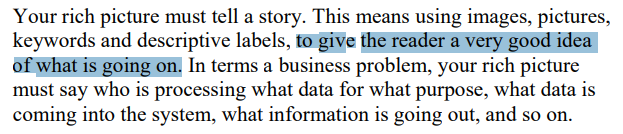
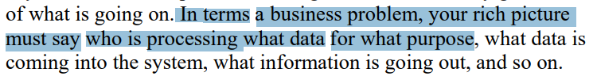
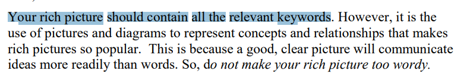
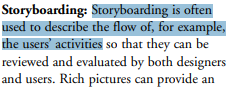
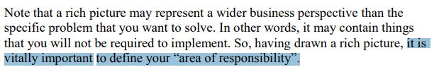

Planejamento da Verificação da Etapa 1 do Grupo
Introdução
O artefato visa apresentar o planejamento para a verificação de cada artefato da etapa 1 do projeto do grupo.
Objetivos
O objetivo deste documento é verificar se os artefatos produzidos para entrega 1 do grupo possuem os itens e o padrão exigidos. É importante citar que essa verificação em momento nenhum busca diminuir os membros responsáveis seu trabalho, apenas aplicar os conceitos de verificação.
Metodologia
A metodologia escolhida para esta verificação é uma adaptação da inspeção. Desenvolvida originalmente para códigos de software por Fagan na IBM em 1976, essa técnica consiste em uma revisão formal dos artefatos produzidos a fim de se encontrar defeitos, a figura 1 exemplifica as etapas que Fagan propôs para esse processo.
Figura 1 - Etapas da Inspeção de acordo com Fagan.

Fonte: SOMMERVILLE (2007).4
Objetos da Verificação
Os artefatos alvos dessa verificação são:
- Heatmap na versão 1.1 de data 31/10/2024, produzido por Victor Rodrigues e Thales Euflauzino com revisão de Thales Euflauzino e Víctor Schmidt.
- Lista de apps avaliados na versão 1.5 de data 31/10/2024, produzido por e revisado por todos os membros do grupo.
- App Escolhido na versão 1.3 de data 29/10/2024, produzido por Victor Rodrigues e Júlia Takaki com revisão de Thales Euflauzino e Víctor Schmidt
- Rich Picture na versão 1.1 de data 02/11/2024, produzido por Thales Euflauzino e Júlia Takaki com a revisão de Víctor Schmidt.
- Cronograma na versão 1.3 de data 02/11/2024, produzido por Maria Helena e Víctor Schmidt com revisão de Thales Euflauzino.
Resultados das Verificações
Os resultados das verificações podem ser acessados através do seguinte link:
Cronograma
A verificação será realizada no período de 06 de novembro de 2024, com os resultados sendo relatados através da página de documentação do Grupo 5 no dia 06 de novembro de 2024. A tabela 2 a seguir, apresenta o cronograma das atividades a serem realizadas.
Tabela 2 - Cronograma das Atividades.
| Data | Descrição | Responsável |
|---|---|---|
| 30/10/2024 | Verificação do Rich Picture. | Thales Euflauzino e Víctor Schmidt |
| 02/11/2024 | Adição dos resultados. | Víctor Schmidt e Victor Rodrigues |
Autor: Víctor Schmidt, 2024
Lista de Verificação
As listas de verificação foram construídas levando em conta os padrões esperados para cada artefato e as principais tarefas realizadas na elaboração dos mesmos, tudo isso de acordo com os slides da Aula 04 da professora Milene e Maurício Serrano3 e a literatura Introducing Rich Picture - Rich Picture Drawing Guidelines2.
Com o intuito de melhor organizar a verificação, a lista de verificação será dividida em 2 listas sendo que uma deverá estar presente em todas as etapas de verificação, no caso a Lista de Verificação Geral. Sendo assim, as listas de verificação serão as seguintes: Geral e Rich Picture. As tabelas de 3 a 4 apresenta as listas de verificação utilizadas na verificação.
Geral
Tabela 3 - Lista de Verificação dos Itens do Planejamento Geral do projeto .
| ID | Descrição | Avaliação |
|---|---|---|
| 1 | Uma página apresentando os integrantes da equipe (com foto) com nome e sem matrícula? | --- |
| 2 | o cronograma do planejamento apresenta todas as atividades de todas as etapas para cada integrante com as datas de início e fim das entrega dos artefatos e com o período da revisão deles? | --- |
| 3 | o cronograma do planejamento apresenta um período de gravação da apresentação de cada etapa | --- |
| 4 | O cronograma prever um período de revisão/ajustes nos artefatos devidos as considerações dos monitores/professor? | --- |
| 5 | A motivação e os critérios para a escolha do App? | --- |
| 6 | Cópia do Termo de Uso, Direito de Uso ou Propriedade Intelectual do aplicativo permitindo o estudo na disciplina. | --- |
| 7 | Possui opção de contraste de cores? | --- |
Autores: Equipe do Projeto, 2024.
Rich Picture
O Rich Picture para o Tesouro Direto foi criado pela Julia Takaki e ajudou a equipe a visualizar os processos e os principais pontos do projeto de maneira clara e direta. Já a lista de verificação foi desenvolvida por todos os membros, reunindo as contribuições e perspectivas de cada um. Esse trabalho colaborativo garantiu que todas as etapas fossem cuidadosamente planejadas e acompanhadas, facilitando a organização e permitindo que o grupo mantivesse o foco nos objetivos do projeto.
Tabela 4 - Lista para a Verificação do Rich Picture.
| ID | Descrição | Avaliação |
|---|---|---|
| 1 | O Rich Picture conta uma história clara e compreensível? Autor: Thales Euflauzino |
--- |
| 2 | O fluxo de dados está claro? quem está processando qual dado e para qual propósito, por exemplo Autor: Victor Rodrigues |
--- |
| 3 | O Rich Picture tem todas as palavras chaves necessárias do projeto? Autor: Víctor Schmidt |
--- |
| 4 | O Rich Picture utiliza um storyboard para descrever o fluxo de, por exemplo, atividades dos usuários? Autor: Julia Takaki |
--- |
| 5 | O Rich Picture contém uma representação visual clara da delimitação do sistema, ou seja, da sua "área de responsabilidade"? Autor: Maria Helena |
--- |
Autores: Victor Schmidt e Thales Euflauzino, 2024.
Bibliografia
REQUISTOS DE SOFTWARE. Planejamento da Verificação da Etapa 1 do Grupo 2. Disponível em: https://requisitos-de-software.github.io/2023.1-BilheteriaDigital/verificacao/grupo2/entrega1/planejamento-verificacao-e1-grupo2/. Acesso em: 2 nov. 2024.
2. REVADI, Chindy Elsanna. Introducing Rich Pictures - Rich Picture Drawing Guidelines. Disponível em: https://aprender3.unb.br/pluginfile.php/2523045/mod_resource/content/2/1_5145791542719414573.pdf. Acessado em: 02 de novembro de 2024.
3. SERRANO, MAURÍCIO; SERRANO, Milene. Slides da aula Requisitos – Aula 04. Disponível em: https://aprender3.unb.br/pluginfile.php/2523041/mod_resource/content/3/Requisitos%20-%20Aula%2004.pdf. Acessado em: 02 de novembro de 2024.
4. SOMMERVILLE, Ian. Engenharia de software. 08. ed. São Paulo: Pearson Addison Wesley, 2007
5

6

7

8

9

Histórico de Versões
| Versão | Data | Descrição | Autor(es) | Revisor(es) |
|---|---|---|---|---|
1.0 |
02/11/2024 | Criação do documento | Víctor Schmidt e Victor Rodrigues | Thales Euflauzino |
1.1 |
12/11/2024 | Corringindo checklist para lista de verificação | Thales Euflauzino | Victor Rodrigues |
1.2 |
12/11/2024 | Corringindo fonte para autor | Thales Euflauzino | Victor Rodrigues |
1.3 |
20/11/2024 | Corringindo sobrenome do victor rodrigues | Thales Euflauzino | |
1.4 |
21/11/2024 | Corringindo link do cronograma | Thales Euflauzino | Victor Rodrigues |